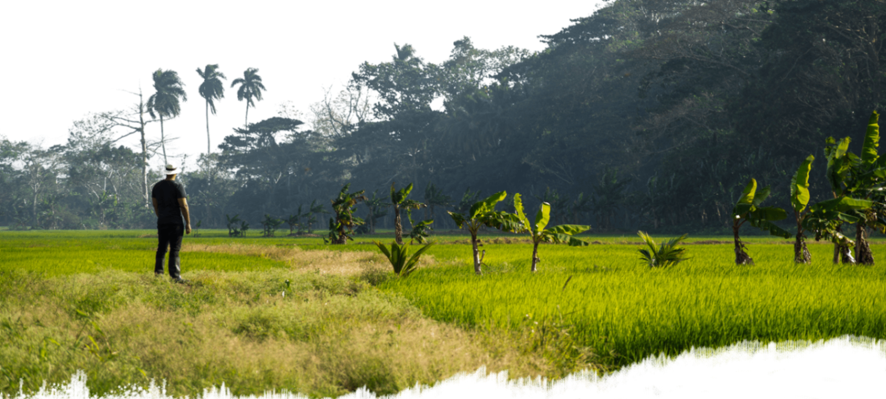

2009 stand ich im Saturn – unter kaltem Neonlicht, umgeben von Bildschirmen, Kabeln und dem gleichmäßigen Summen der Technikabteilung. Alles war funktional: Schichtpläne, Produktdaten, Regeln. Auf meiner Brust klebte dieses Namensschild. Ein kleines Stück Plastik, das sagte: Angestellter. Austauschbar.
Dann stand meine Tante plötzlich vor mir. Zwischen Fernsehern und Laptops sah sie mich an, als würde sie durch die Uniform hindurchsehen, und fragte: „Du weißt schon, woher du kommst, oder?“ In dem Moment wurde es still. Nicht im Laden – in mir. Als hätte jemand den Ton aus meinem Alltag gedreht.
Unsere Wurzeln liegen in María Trinidad Sánchez, im Norden der Dominikanischen Republik – dort, wo die Erde dunkel und fruchtbar ist, wo Wärme in der Luft liegt und wo man den Boden nicht „Nutzfläche“ nennt, sondern Herkunft. Und unser Name ist dort nicht einfach nur ein Name. Mein Vorfahr Pedro Santana war der erste Präsident der Dominikanischen Republik. Das klingt groß – und genau deshalb hat es mich im Saturn so klein fühlen lassen.
Ich hatte gelernt, Europa zu verstehen: Märkte, Abläufe, Erwartungen. Aber ich verstand nicht mehr wirklich, wie zu Hause alles atmet. Nicht mehr unsere Erntezyklen, nicht die Logik der Felder, nicht die Realität der Menschen, die jeden Tag mit ihren Händen arbeiten.
Und dann kamen diese Sätze aus der Heimat: Die Leute fragten nach mir. Nicht aus Neugier – aus Hoffnung. Das war kein romantischer Gedanke. Das war Druck. Und gleichzeitig etwas wie ein Ruf.
Meine Mutter war die Erste, die den Gedanken in eine klare Richtung geschoben hat. Kein Drama, kein Vortrag – nur ein Satz, der hängen blieb: „Zu viel bleibt bei Zwischenhändlern hängen.“
Ich habe in dem Moment tiefen Respekt gespürt. Für ihren Blick. Für ihre Klarheit. Und auch für die Realität dahinter. Aber genauso klar war: Den Weg muss ich selbst gehen.
Also habe ich angefangen, mir alles selbst beizubringen – wirklich alles: Export, Logistik, Zoll. Nächte, in denen ich über Papieren saß, Zahlen geprüft, Formulare verstanden, Abläufe zerlegt und wieder zusammengesetzt habe. Nicht, weil es „Business“ war. Sondern weil ich begriffen habe: Wenn ich diesen Namen trage, muss ich ihn mir verdienen – Schritt für Schritt.
2015 kam der erste echte Schritt: 3 Tonnen Rohkaffee. Kein riesiger Vertrag. Kein perfektes System. Nur eine Entscheidung – und eine Menge Verantwortung.
Als dieser Container ankam, war das kein normaler Moment. Ich erinnere mich an den Herzschlag, an dieses kurze Innehalten, bevor man die Türen öffnet. Nicht, weil es „Ware“ war – sondern weil es ein Beweis war. Dass ich es wirklich kann. Dass ich es mir erarbeitet habe. Dass Herkunft nicht nur eine Geschichte ist, sondern etwas, das man in Bewegung setzt.
Daraus entstand Santana Coffee. Es ging um Kontrolle, Qualität und Fairness – und darum, die Kette so zu bauen, dass am Ende nicht nur der Markt gewinnt, sondern auch die Menschen, die den Ursprung möglich machen.
Aus Santana Coffee wurde mehr. Schritt für Schritt entwickelten sich daraus Santana Fruits und Santana Chocolate. Nicht, weil es „schön klingt“, sondern weil es logisch war: Wir verbinden unsere Wurzeln mit dem europäischen Markt – mit dem Anspruch, transparent zu arbeiten und Qualität nicht zu versprechen, sondern zu liefern.
Heute weiß ich: Der Wendepunkt war nicht der Container. Nicht der Markenname. Nicht ein einzelner Erfolg.
Der Wendepunkt war das Aufwachen in einem Saturn unter Neonlicht – mit einem Namensschild auf der Brust – und der Erkenntnis, dass „Santana“ zu Hause Geschichte bedeutet. Meine Tante hat mich erinnert. Meine Mutter hat den Anstoß gegeben. Den Rest habe ich mir selbst erarbeitet.
Und genau deshalb endet diese Geschichte nicht mit einem Rückblick, sondern mit einem Ausblick: Herkunft bedeutet Verantwortung. Und Verantwortung heißt, jeden Tag neu zu beweisen, dass wir unserer Geschichte gerecht werden – mit sauberer Arbeit, klaren Wegen und dem Mut, es richtig zu machen.